作者：Brady Dommermuth
译者：MTGCN翻译组
原文地址：https://magic.wizards.com/en/articles/archive/feature/known-mutliverse-2008-03-19
有那么些文字──无论我打多少遍还是会不断地将他们打错。在为万智牌工作了十多年后，你会认为自己不会吹灰之力就能将“生物”打出来，但我还是有过半的时间把它错打成“生雾”。然后当我试图打出“多重世界”时，打出来的却是“多重视界”。
某天晚上，我在威士智的办公室里赶工某篇快要到期的稿子，我脑子里想的是“Mutliverse”，打出来的确实“Muttleyverse”。我 突然想到了Muttley，那个由Hanna-Barbera公司创作出来的，总是抿着嘴窃笑的小狗，我想象着它是创造出无数个万智牌奇幻世界的造物主，将旅法师的火种传授给心仪的弱等生物。天色已晚，我的脑袋又不是很清醒，于是大笑了起来。此时，清洁工来到了我的废纸篓旁边。好吧，至少他早就把我当成了个疯狂的游戏设计人了。
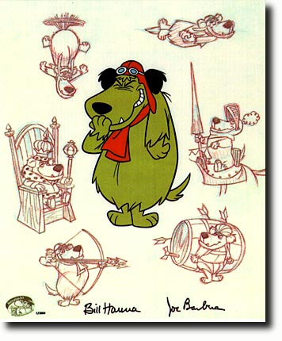
当Doug Beyer这个星期找到我，请我帮他完成一份即将到期的稿件时，我欣然答应了，但我不知道究竟写什么好。然后我脑中出现了Doug熬夜构画出我们所喜爱的那些多重世界的图像，我突然发现，很多牌手甚至不清楚我们究竟去过了多少个多重世界。
在万智牌的世界里，你扮演的是一位旅法师──一位游荡于多重世界、力量无穷的法师。恩，真酷。但如果那些世界不值得一看，获得四处旅行的力量又有什么意义呢？
我很大一部分工作就是为了保证这些世界鲜活有趣。自万智牌初始到现在，已经有超过24个平行世界被提及、探索、创造和/或摧毁掉了。我想一般的牌手也许就认识六个左右。让我们看看这些世界吧。
源自卡牌的多重世界
Dominaria 多明纳里亚
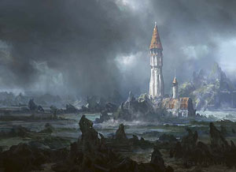 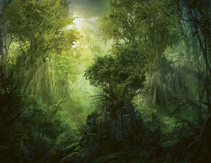
多明纳里亚这个世界占据了万智牌故事线的绝大部分，包括了克撒与米斯拉之间的“兄弟之战”；晴空号飞船和她船员的冒险故事，以及野蛮人勇士卡马尔的 故事。多明纳里亚有着广袤的大陆和宽广的海洋──它的表体面积大约是地球的两倍。这有着无数为万智牌牌手所熟知的地名：罗堰、西瓦、宾纳里亚、乌尔博格、 陶拉里亚以及其它很多。
多明纳里亚的故事线是按照以下系列顺序发展的：
- 古文明之战 Antiquities
- 传承 Legends
- 黑暗王朝 The Dark
- 堕落王国 Fallen Empires
- 冰雪时代 Ice Age
- 同盟 Alliances
- 海市蜃楼 Mirage
- 憧憬 Visions
- 晴空号传说 Weatherlight
- 克撒传 Urza’s Saga (克撒环境的故事也牵涉了萨拉圣域等其它空间。)
- 远古遗产 Urza’s Legacy
- 天命之战 Urza’s Destiny
- 预言 Prophecy
- 大战役 Invasion
- 时空转移 Planeshift
- 启示录 Apocalypse
- 奥德赛 Odyssey
- 绝境 Torment
- 神遣 Judgment
- 石破天惊 Onslaught
- 万马千军 Legions
- 劫运降临 Scourge
- 骤霜 Coldsnap
- 时间漩涡 Time Spiral
- 时空混沌 Planar Chaos
- 预知未来 Future Sight
Kamigawa 神河
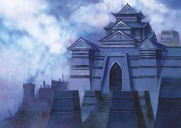
系列：神河群英传 Champions of Kamigawa；神河叛将谱 Betrayers of Kamigawa；神河任侠传 Saviors of Kamigawa；
神河这个世界类似于战国时代的日本，且包括了两个“共生”的次世界。一个是“隐世”──凡人所生活的物质世界；“现世”──神明存在的世界。在神河的故事中，一位诡计多端的神明和一位月人共谋说服了一位封建领主将一个神明从现世的保护中偷了出来，以达成自己的不朽之身，令天下臣服。这就是逆神之战的始端，神河的居民与他们的“神”战斗的故事。
正是多明纳里亚的旅法师们所造成的伤害让今田城主趁机将神明从现世中偷了出来。多明纳里亚的时逢削弱了神河中两个世界的隔断，今田的阴谋才由此得逞。
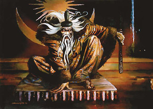
洛温/暗影荒原 Lorwyn / Shadowmoor
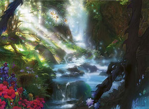 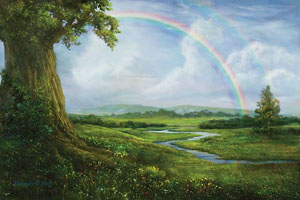
系列：洛温 Lorwyn；晨光 Morningtide；暗影荒原 Shadowmoor；暮光 Eventide
洛温是一个身处永夏的小世界，这里的太阳从不会完全落山。同时洛温中也没有人类存在。洛温是由地精统治着的，他们认为自己拥有着仲裁、扭曲自然万物的能力。
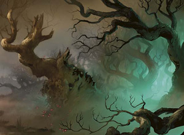 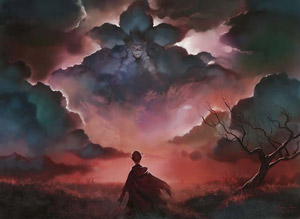
暗影荒原正好相反，是一个永夜的世界，你不能清楚地看到太阳，光亮都来自于一些难以琢磨的地方。暗影荒原里也没有人类，但在这个世界里，地精成了拯救世界的希望──他们守卫着仅存的美好事物和遗迹。
当然这两个世界是有联系的，但具体的联系还不清楚。一件神秘的事件──奥罗拉（Aurora，曙光女神）与此变化有不可脱离的干系，当然，仙灵之群的女皇欧娜的影像也不容忽视。两个世界的更深一层联系还不得而知。
玛凯迪亚 Mercadia
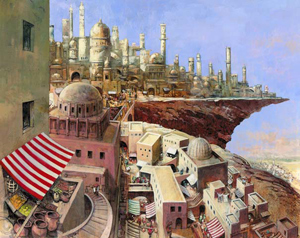 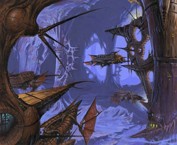
系列：玛凯迪亚 Mercadian Masques，宿敌 Nemesis，预言 Prophecy
这是一个奇形怪状、处处不合理的世界：最大的城市处在一座倒转的山上，精灵盘踞在了社会的顶层。商业活动是玛凯迪亚的命脉，玛凯迪亚城内人类与精灵精密的外交与来自夏帕左的人鱼是这个世界的主要角色。
杰拉尔德和晴空号的船员从瑞斯逃出来后瞎撞到了这个世界里。他们在玛凯迪亚坠机，晴空号随即被一群自称是柯-尔林的防抗军抢走。杰拉尔德不得不和玛凯迪亚的各层打叫道好取回飞船，修理部件，最后安全离开这个世界。
英雄们随即发现玛凯迪亚城脚下的倒山其实是空心的，里面藏了大量准备入侵多明纳里亚的非瑞克西亚飞船。控制玛凯迪亚的凯壬精灵们实际上是非瑞克西亚的走狗。在一番缠斗后，晴空号离开了这个世界，飞回多明纳里亚保卫家园。
秘罗地 Mirrodin
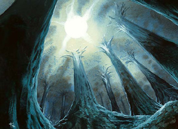
系列：秘罗地 Mirrodin，玄铁 Darksteel，五色曙光 Fifth Dawn
秘罗地这个神器世界是由卡恩创造的。它原本叫做Argentum。卡恩在自己环游多重宇宙时创造了一个守护者来看管这个世界。卡恩将旅法师洁丝卡带来参观这个世界，生称它是“数学上的完美状态”，但两个人却不小心的在这个世界里引入了一种传染源──它可以将肉身变成金属，又可以将金属变为肉身。这个传染源也感染了守护者，它开始有自己的意识，把自己叫做蒙纳坷，并开始反对自己的创造者。传染遍布了整个世界，充满法力的内核开始变得不稳定起来，一种叫做构生的金属式生长开始随处可见。
发疯的蒙纳坷开始用复杂的仪器将其它世界的能自相残杀的神器转送到秘罗地。秘罗地被他变成了一个充满有机生命的生态环境。他希望能找到一个带有旅法师火种的生命，然后将它据为己有。然后它就可以离开这个地方，追随卡恩。蒙纳坷的思想变成了具有奥术能量的屏障，将其它的旅法师──甚至卡恩──挡在了外面。换句话说，蒙纳坷思想的部分变成了现实。
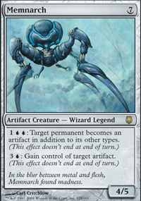
持有旅法师火种的地精寻日者格莉莎成了蒙纳坷的目标。格莉莎通过自己的智谋和同盟的帮助摧毁了蒙纳坷。卡恩也藉此再次进入了这个世界，恢复了平衡。许多密罗地的生活回到了自己的世界。卡恩将蒙纳坷的残骸变回了原型──一个金属球──映奇宝珠。
非瑞克西亚 Phyrexia
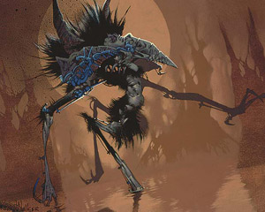 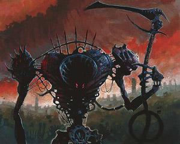
系列：克撒传、远古遗产、天命之战、大战役、时空转移、启示录。
非瑞克西亚是由一名喜欢龙型的旅法师创造出来的，由类生物神器构成的世界。这个世界由九重天构成，每一层都比上一层更加残暴骇人，它们一起构成了一个硕大而精妙的人工生态环境。
当多明纳里亚的索蓝帝国衰亡后，旅法师Dyfed将约格莫夫带到了刚刚失去了创造者和主人的非瑞克西亚。Dyfed也在多明纳里亚和非瑞克西亚之间创造出了一个传送门。约格莫夫将非瑞克西亚视作拯救由于充斥着强能石引起的退化性疾病而日渐衰亡索蓝帝国的方法。他想用非瑞克西亚的死灵神器魔法来“治疗”夺取无数索蓝人性命的痨病。他成为了非瑞克西亚的新主子。
借助非瑞克西亚扭曲的环境，约格莫夫的狂妄与力量与日俱增。他认为非瑞克西亚才是进化的终点──它是高于生命的。索蓝人开始惧怕约格莫夫的作为和随之而来的影响。索蓝帝国与约格莫夫的非瑞克西亚之间的战争爆发了。索蓝人战败了，但传送门没有及时关闭，约格莫夫与非瑞克西亚人被困在了这个世界。
约格莫夫早就渴望着征服多明纳里亚了。他最初的入侵方式是瑞斯──这个企图架在非瑞克西亚和多明纳里亚之间的桥梁空间。入侵被旅法师与英雄们的同盟挫败了。一群旅法师用古老的“魂暴”消灭了非瑞克西亚，而在多明纳里亚，来自晴空号的勇士们用远古遗产杀死了约格莫夫。
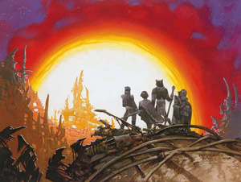
Rabiah the Infinite（Rabiah是阿拉伯语，意思是“温柔的风”）
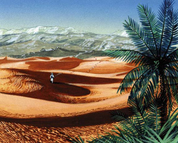
系列：阿拉伯之夜 Arabian Nights
曾经是一个独立的世界，Rabiah这个沙漠国度出现于一次起因不明的事件：这个世界中一千面几乎一模一样的镜子来到的这个世界，创造出了一千零一个Rabiah。这些平行世界经过了数个世纪的演化，某些相关，某些无关。
Rabiah的很多元素都取材于一千零一夜，但在万智牌漫画中出现的故事主线则是旅法师Taysir在五个平行空间中分身的故事，每个分身代表了一个颜色的魔法，他们齐心协力战胜了邪恶的术士Nailah。
瑞斯 Rath
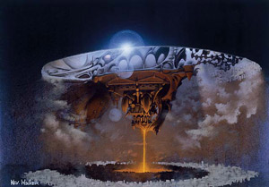 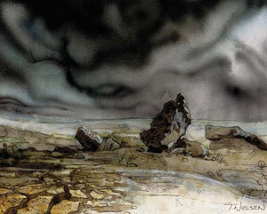
系列：暴风雨 Tempest、天罗城塞 Stronghold、出瑞斯记 Exodus、宿敌
瑞斯是一个为非瑞克西亚入侵而生的神器世界。这个空间是由从各个空间，包括多明纳里亚所窃来的东西组成的，由来自非瑞克西亚的一种叫做液石的基质粘合而成。非瑞克西亚指派了一位“魔将”来监督瑞斯的进程，Davvol、瓦拉司和吸血鬼寇维克斯都在这个位置任职过。
瑞斯最大的特点就是处于中心的大魔将的城塞，它即是一个碉堡，也是一个液石工厂。城塞所在的山峰里有很多危险，包括了一个裂片妖巢和它的皇后，一个死冥坑，以及瓦拉司的杀人花园。
晴空号来到瑞斯来拯救船长西赛。随后瑞斯开始大举入侵多明纳里亚，准备像一张大网一样将多明纳里亚笼罩。这种时空颠簸为数目庞大的非瑞克西亚军队进入提供了机会，入侵随之开始。
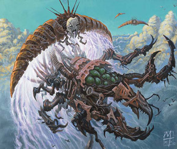
拉尼卡 Ravnica
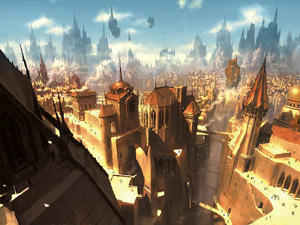 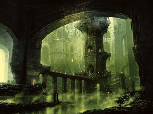
系列：拉尼卡 Ravnica: City of Guilds、十会盟 Guildpact、纷争 Dissension
这个过渡发展，人口稠密的世界是一个由千年历史的城市森林覆盖的地方──它的子民遍布整个世界，连野外也不例外。整个世界都是街道与建筑的迷宫。拉尼卡在十会盟签订前一直处于秩序与混乱的交替状态。这个带有魔力的契约约束了十个工会，为它们规定了自己的角色与功能，并且分别代表了五个之中的两个颜色。十会盟维持了一万年的秩序，直到三个强势工会──俄佐立、析米克和底密尔合谋将其破坏为止。
在十会盟的最后几十年，大群死去的幽魂聚集在拉尼卡，形成了一个更大的，叫做Agyrem的“魂魅城区”。但只有伊捷工会对此有所怀疑，认为这是一个叫做多明纳里亚的空间出现的时空混乱而导致的事件。来自时空的碎片不是将拉尼卡与其它空间隔绝，死去的灵魂也被困于此。
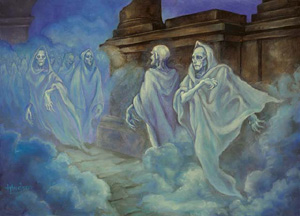
撒拉的圣域 Serra’s Realm
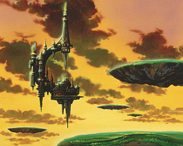
系列：克撒传 Urza’s Saga、远古遗产 Urza’s Legacy、天命之战 Urza’s Destiny
这个人造空间是由旅法师撒拉创造，用来播扬她对和平与律法之爱的。这是一个由白色法力铸造成的冥思空间。这里的居民包括了由撒拉创造出的，数不清的天使，还是有一些由她带到这个空间的其它空间的难民。
当克撒逃亡至此躲避非瑞克西亚的追杀时，撒拉和她的天使救助了他。但非瑞克西亚人发现了这个世界，然后大举进攻，用黑色法力污染了它。撒拉遗弃了这个世界，为它的堕落心碎不已。她的一位大天使──蕾荻安在撒拉离去后接管了这个世界。但她在试图清楚非瑞克西亚的狂热中迷失了自己，变成了龙型。
失去了创造者的撒拉圣域慢慢地崩溃了。急切为晴空号寻找强力的法力能量的克撒故意将这些崩溃的能量灌注到了强能石里，用强能石驱动了晴空号的引擎，间接加速了圣域的灭亡。
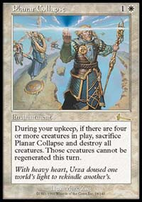
Ulgrotha
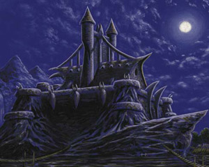
系列：家园 Homeland
有时被自己居民叫做“家园”的Ulgrotha，是一片很久之前受到旅法师之间的法术大战焦灼的土地。空间里的法力在旅法师Ravi，后来的Grandmother Sengir敲响Apocalypse Chime以结束古老的战争时被消损。
随后旅法师菲罗和撒拉决定接管Ulgrotha，菲罗施放了一道强力的魔法屏障（菲罗的禁咒，七版）以抵御外敌入侵。不过随着菲罗的过世，屏障随之消弱。Ulgrotha是Baron Sengir，一位使用黑色魔法和恐惧的凡派尔（就是吸血鬼）的老家。
辛格氏城堡的深处连接着一个另一个未知的空间──菲罗在过世前猜测Ulgrotha的大量法力都通过这个传送门输入到了那个世界。
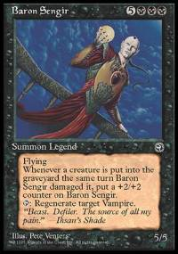